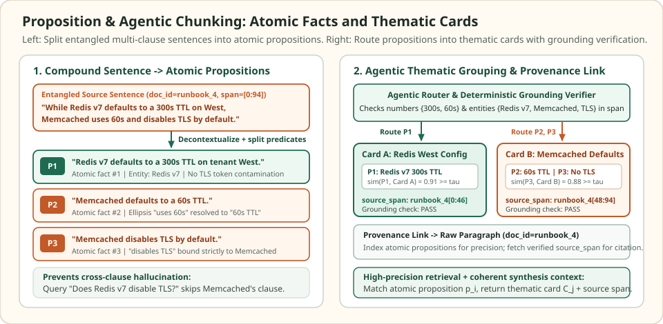

Proposition and agentic chunking: decompose text into atomic self-contained facts
Sentence and paragraph splitters assume that a grammatical sentence expresses a single retrieval unit. In technical documentation, comparative tables, and incident postmortems, a single compound sentence frequently contrasts two services, two environments, or two policy rules inside one breath—binding both subjects and both predicates into the same pooled embedding vector.
Proposition chunking (Chen et al., Dense X Retrieval, 2024) decomposes prose below the sentence level into atomic, self-contained factual claims, while agentic chunking routes those claims into coherent thematic cards backed by deterministic source-span grounding checks.
Why even a one-sentence chunk can hallucinate across clauses
One compound sentence · two caching systems · cross-clause contamination
A runbook sentence $S$ states: "While Redis v7 defaults to a 300s TTL on West, Memcached uses 60s and disables TLS by default." In the 4D feature space $(\text{Redis}, \;\text{Memcached}, \;\text{TTL}, \;\text{disables\_TLS})$, query $q = (0.7071, 0.0, 0.0, 0.7071)$ asks: "Does Redis v7 disable TLS by default?"


When $S$ is embedded as a single sentence chunk, pooling mixes Redis v7 from the first clause with disables TLS from the second clause, giving $e(S) = (0.5, 0.5, 0.5, 0.5)$ and a high cosine similarity of $0.7071$ with $q$. Worse, when $S$ lands in the prompt of a fast reader model under time pressure, the clause juxtaposition frequently triggers a false affirmative answer.
Query q = (0.7071, 0.0000, 0.0000, 0.7071) for "Does Redis v7 disable TLS by default?" in (Redis, Memcached, TTL, disables_TLS) space.
| Retrieval unit and text | Unit vector (Redis, Mem, TTL, noTLS) | Cosine sim with q | Binds Redis + disables_TLS? | Assigned thematic card |
|---|---|---|---|---|
| Raw sentence S (entangled clauses) | (0.5000, 0.5000, 0.5000, 0.5000) | 0.7071 | Yes (false coupling!) | Unseparated paragraph |
| P1: "Redis v7 defaults to a 300s TTL on tenant West." | (0.7071, 0.0000, 0.7071, 0.0000) | 0.5000 | No | Card A (Redis West Config) |
| P2: "Memcached defaults to a 60s TTL." | (0.0000, 0.7071, 0.7071, 0.0000) | 0.0000 | No | Card B (Memcached Defaults) |
| P3: "Memcached disables TLS by default." | (0.0000, 0.7071, 0.0000, 0.7071) | 0.5000 | No (subject is Memcached) | Card B (Memcached Defaults) |
Scroll horizontally to compare the columns. Keyboard: focus the table, then use the left and right arrow keys.
Splitting $S$ into $P_1, P_2, P_3$ drops the spurious cross-clause match from $0.7071$ to $0.5000$ and ensures that any retrieved proposition states a single subject-predicate relationship explicitly.
What defines a well-formed proposition
Following Chen et al. (2024), a passage $D$ is mapped by a propositionizer $\mathcal{P}(D) = \{p_1, \dots, p_k\}$ into minimal factual strings that satisfy three invariants:
| Invariant | Definition | Transformation on source sentence $S$ |
|---|---|---|
| 1. Atomic | Expresses exactly one distinct fact, relation, or configuration predicate without conjunctions that join independent claims | Separates "uses 60s" ($P_2$) from "disables TLS by default" ($P_3$) |
| 2. Self-contained (Decontextualized) | Resolves pronouns, ellipsis, section headers, and shorthand so the claim is unambiguous outside its paragraph | Expands ellipsis "uses 60s" into "Memcached defaults to a 60s TTL" and "West" into "tenant West" |
| 3. Faithful with provenance | Strictly entailed by the source span ($D \models p_i$) and linked to an immutable (doc_id, start_char, end_char) pointer | Attaches runbook_4[0:46] to $P_1$ and runbook_4[48:94] to $P_2, P_3$ |
Agentic proposition grouping into thematic cards
Indexing bare 12-word propositions improves retrieval precision, but feeding ten disconnected one-line claims to a reader LLM often strips away surrounding operational caveats. An agentic chunker maintains a dynamic list of thematic cards $\mathcal{C} = \{C_1, \dots, C_m\}$, where each card stores a short title, a running summary embedding $u(C_j)$, and a list of member propositions with their provenance spans.
As each verified proposition $p_i$ arrives, the router scores its similarity against existing cards and either appends it to the best matching card or opens a new card when the score falls below threshold $\tau$:
At query time, the vector index searches over the individual proposition embeddings $e(p_i)$ for fine-grained recall, then expands each hit to its enclosing thematic card $C_{j^\star}$ (or verified source paragraph) before synthesis.
Grounding checks, cost, and runnable verification
Because proposition extraction rewrites surface text using an LLM or seq2seq model (such as Flan-T5-Large in Dense X Retrieval), an unguarded extractor can silently flip a negation, invent a unit, or copy a number into the wrong clause—polluting the index permanently. Production pipelines enforce a deterministic grounding verifier before any proposition is indexed: every numeric literal, unit token, negation marker, and named entity in $p_i$ must appear in the linked source span $D[\text{start}:\text{end}]$ or its section header chain.
import re
import numpy as np
source_sentence = (
"While Redis v7 defaults to a 300s TTL on West, "
"Memcached uses 60s and disables TLS by default."
)
section_header = "Cache Cluster TTL Configuration (tenant West)"
propositions = [
("P1", "Redis v7 defaults to a 300s TTL on tenant West.", (0, 46)),
("P2", "Memcached defaults to a 60s TTL.", (47, 94)),
("P3", "Memcached disables TLS by default.", (47, 94)),
]
def verify_grounding(prop_text, span_text, header_text):
allowed = (span_text + " " + header_text).lower()
# Every number/unit literal in the proposition must appear in the source span
nums = re.findall(r"\b\d+[a-z]*\b", prop_text.lower())
for tok in nums:
if tok not in allowed:
return False, f"Unverified numeric literal: {tok}"
# Every capitalized identifier must appear in the source span or header
entities = re.findall(r"\b[A-Z][A-Za-z0-9_]+\b", prop_text)
for ent in entities:
if ent.lower() not in allowed:
return False, f"Unverified entity: {ent}"
return True, "PASS"
for pid, text, (s, e) in propositions:
ok, msg = verify_grounding(text, source_sentence[s:e], section_header)
assert ok, msg
# Reject a hallucinated proposition that invents a 120s TTL or flips the entity
bad_ok, bad_msg = verify_grounding(
"Redis v7 disables TLS after 120s.", source_sentence[0:46], section_header
)
assert not bad_ok and "120s" in bad_msg
# 4D basis: [Redis, Memcached, TTL, disables_TLS]
def unit(v):
v = np.asarray(v, dtype=float)
return v / np.linalg.norm(v)
q = unit([1.0, 0.0, 0.0, 1.0]) # "Does Redis v7 disable TLS by default?"
e_raw = unit([1.0, 1.0, 1.0, 1.0]) # Entangled sentence S
e_p1 = unit([1.0, 0.0, 1.0, 0.0]) # P1: Redis + TTL
e_p2 = unit([0.0, 1.0, 1.0, 0.0]) # P2: Memcached + TTL
e_p3 = unit([0.0, 1.0, 0.0, 1.0]) # P3: Memcached + disables_TLS
assert round(float(q @ e_raw), 4) == 0.7071
assert round(float(q @ e_p1), 4) == 0.5000
assert round(float(q @ e_p2), 4) == 0.0000
assert round(float(q @ e_p3), 4) == 0.5000
# Agentic routing of propositions into entity-anchored thematic cards (tau = 0.65)
entity_weights = np.array([1.5, 1.5, 0.7, 0.7])
cards = [] # each item: {"ids": [...], "vecs": [...], "centroid": unit_vec}
tau = 0.65
for pid, raw_v in [
("P1", [1.0, 0.0, 1.0, 0.0]),
("P2", [0.0, 1.0, 1.0, 0.0]),
("P3", [0.0, 1.0, 0.0, 1.0]),
]:
vec = unit(np.asarray(raw_v) * entity_weights)
if not cards:
cards.append({"ids": [pid], "vecs": [vec], "centroid": vec})
continue
sims = [float(vec @ c["centroid"]) for c in cards]
best_j = int(np.argmax(sims))
if sims[best_j] >= tau:
cards[best_j]["ids"].append(pid)
cards[best_j]["vecs"].append(vec)
cards[best_j]["centroid"] = unit(np.mean(cards[best_j]["vecs"], axis=0))
else:
cards.append({"ids": [pid], "vecs": [vec], "centroid": vec})
assert [c["ids"] for c in cards] == [["P1"], ["P2", "P3"]]
print("Grounded cards:", [c["ids"] for c in cards])Check the operating assumptions
When is proposition chunking worth its extra ingestion cost?
Proposition decomposition pays off on high-value, densely packed reference corpora—such as clinical guidelines, regulatory filings, configuration runbooks, and comparative product specs—where single sentences routinely pack multiple entities and conditions. For narrative prose, logs, or chat transcripts, recursive + header-aware splitting achieves nearly the same recall at a fraction of the ingest compute.
Why should the index keep a pointer to the raw source span instead of discarding the original paragraph after extracting propositions?
Extracted propositions are model-generated rewrites. Keeping an immutable (doc_id, start_char, end_char) pointer lets the application highlight exact verbatim quotes for user audit, verify that no numbers or negations drifted during extraction, and provide surrounding paragraph context to the generator at synthesis time.
What goes wrong if the agentic card-routing threshold tau is set too low?
A low threshold merges propositions about distinct entities (such as Redis v7 and Memcached) into the same thematic card whenever they share a generic attribute like "TTL," recreating the exact cross-entity entanglement that proposition splitting was designed to eliminate.
Sources
- Chen et al.: Dense X Retrieval: What Retrieval Granularity Should We Use?, EMNLP 2024 (arXiv:2312.06648, proposition definition and the Propositionizer model).
- LlamaIndex: Evaluating Retrieval Granularity and Proposition-Based Indexing, retrieval precision vs synthesis context trade-offs.